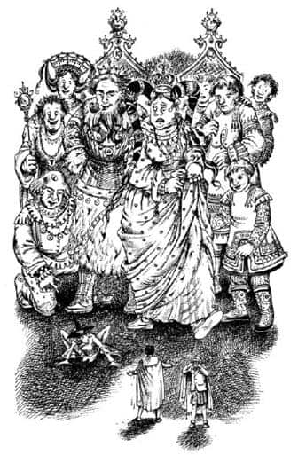
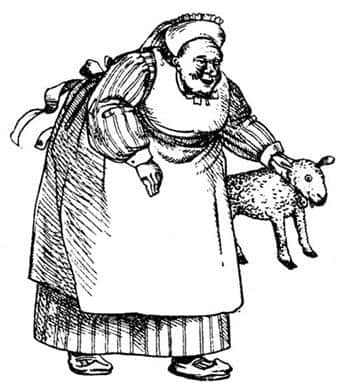
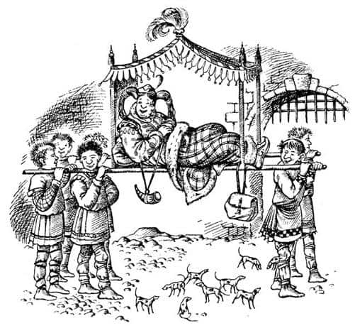

Harfang Sarayı
“Haydi Pole, göster marifetini” diye fısıldadı Scrubb.
Jill’in ağzı öylesine kuruydu ki, tek kelime dahi söyleyemeyeceğini anladı. Scrubb’a sen yap dercesine başını salladı.
Scrubb Jill’i ve Suratsız’ı asla affetmeyeceğini düşünerek dudaklarını yaladı ve dev Kral’a bağırdı.
“Efendim, yeşil giysili kadın size selam gönderdi, Sonbahar Şenlikleri’nde burada olmamızdan memnuniyet duyacağınızı söyledi.”
Dev Kral ve Kraliçe birbirlerine bakıp başlarını salladılar ve Jill’in hiç de hoşlanmadığı bir şekilde gülümsediler. Jill Kral’ı, Kraliçe’den daha fazla sevmişti. Zarif, kıvırcık bir sakalı, düz ve kartal gagasına benzeyen bir burnu vardı; yakışıklı bile denebilirdi onun için, bir dev ne kadar yakışıklı olabilirse Kral da o kadar yakışıklıydı. Kraliçe insanın tüylerini diken diken edecek kadar şişmandı; çenesinin altında gıdısı ve şişko bir yüzü vardı. Bu durum normal insanlarda bile pek hoş görünmez, ama insandan on kat daha büyük birinden kuşkusuz daha da kötü görünür. Sonra Kral dilini çıkarıp dudaklarını yaladı. Bunu herkes yapabilir; ama kralın dili o kadar büyük ve kırmızıydı, dudaklarının arasından öylesine beklenmedik bir şekilde çıkmıştı ki, Jill şaşırıp kaldı.
“Ah, ne iyi çocuklar!” dedi Kraliçe. (“Belki de Kraliçe Kral’dan daha iyidir” diye düşündü Jill.)
“Evet, gerçekten” dedi Kral. “Mükemmel çocuklar. Sarayımıza hoş geldiniz. Verin ellerinizi.”
Sağ elini aşağıya uzattı; eli çok temizdi, parmaklarında sayısız yüzük ama aynı zamanda korkunç sivri tırnaklar vardı. Çocukların sırayla uzattıkları ellerini sıkmak için fazla iriydi; ellerini değil kollarını tutmuştu.
“Şu da ne?” diye sordu Kral, Suratsız’ı göstererek.
“Sayıooaaygıın” dedi Suratsız.
“Ah!” diye bir çığlık attı Kraliçe, eteklerini toplayarak. “İğrenç şey! Canlı.”

“O iyi biridir Majesteleri, gerçekten iyidir” dedi Scrubb aceleyle. “Onu tanıdığınızda daha çok seveceksiniz. Bundan eminim.”
Size Jill’in ağlamaya başladığını söylersem umarım kitabın geri kalanında Jill’e olan ilginizi kaybetmezsiniz. Bunun için epeyce nedeni vardı. Ayaklarını, ellerini, burnunu ve kulaklarını yeni yeni hissetmeye başlamıştı. Elbiselerinden erimiş kar suları damlıyordu. O gün neredeyse hiçbir şey yememiş ve içmemişti. Bacakları öyle ağrıyordu ki, daha fazla ayakta duramayacağını hissediyordu. Her neyse, o anda ağlaması herhangi bir şeyden çok daha fazla işe yaradı, çünkü Kraliçe, “Ah, zavallı çocuk! Ziyaretçilerimizi ayakta tutmakla hata ediyoruz, Lordum. Çabuk! Onları götürün. Yiyecek bir şeyler ve şarap verin, banyo yaptırın. Küçük kızı rahat ettirin. Lolipop verin, oyuncak bebekler verin, müshil verin, aklınıza gelen her şeyi verin; şekerlemeler, bonbonlar, frenk kimyonu, ninniler, oyuncaklar… Ağlama küçük kız, yoksa şenlikler başladığında işe yaramazsın” dedi.
Jill oyuncakları ve bebekleri duyduğunda, yetişkin bir insan kadar kızmıştı. Lolipoplar ve bonbonlar yerine göre iyi şeyler olsalar da, Jill verilebilecek daha iyi şeyler olabileceğini ummuştu. Bununla beraber Kraliçe’nin aptalca konuşmasının sonuçları çok iyi olmuştu, çünkü Suratsız ve Scrubb kocaman bir asilzade, Jill de Kraliçe’nin nedimesi tarafından alınıp odalarına götürüldü.
Jill’in odası koca bir han büyüklüğündeydi. Ocakta bir ateş yanmasaydı ve yerde çok kalın, kırmızı bir halı olmasaydı berbat görünürdü. Ancak burada harika şeyler olmaya başladı. Devlerin gözüyle yaşlılıktan neredeyse iki büklüm, küçük ve yaşlı bir kadın, insanların gözüyle de sıradan bir odada başını tavana vurmadan yürüyebilecek ölçülerde bir dev olan dadıya teslim edilmişti. Dadı çok yetenekliydi, ama Jill onun sürekli dilini şaklatıp, “Oh, ne âlâ! Yaşasın”, “İşte bir ördek” ya da “Her şey yolunda ufaklık” gibi şeyler söylemesinden rahatsız oluyordu. Devlerin ayaklarını yıkadıkları büyük küveti suyla doldurdu ve Jill’in içine girmesine yardım etti. Yüzme biliyorsanız (Jill biliyordu) dev bir küvet harika bir şeydir. Biraz sert olmalarına rağmen devlerin havluları da harika şeylerdir, çünkü metrelerce uzunluktadır. Aslında kurulanmaya bile gerek yoktur, ateşin önüne serilen havlunun üzerinde yuvarlanıp keyfinize baksanız yeter. Bunlar bittikten sonra Jill’e temiz ve ısıtılmış elbiseler verildi. Muhteşem elbiselerdi, biraz büyüktü, ama anlaşılan devler için değil, insanlar için yapılmıştı. “Eğer o yeşil giysili kadın burayı ziyaret ediyorsa, bizim boyumuzdaki misafirlere alışkın olmalılar” diye düşündü.
Çok geçmeden haklı olduğunu gördü, çünkü yetişkin bir insan için normal yükseklikte olan bir masa ve sandalye getirildi, çatallar ve bıçaklar da normal büyüklükteydi. Temizlenmek ve ısınmak mükemmel bir şeydi. Ayakları hâlâ çıplaktı ve dev halıya basmak çok hoştu. Halıya bileklerine kadar gömülüyordu; ağrıyan ayaklar için biçilmiş kaftandı. Çay saatine yakın bir zamanda yenmesine rağmen akşam yemeği diyebileceğimiz yemek, tavuklu pırasa çorbası, fırında hindi, sıcak puding, kestane kebap ve sınırsız meyveden oluşuyordu.
Can sıkıcı tek şey Dadı’nın sürekli içeriye girip çıkması ve her girişinde kocaman bir oyuncak getirmesiydi. Jill’den büyük bir bebek, fil kadar tekerlekli bir at, deve gibi bir davul, yünden yapılmış kuzuya benzer şeyler getirip duruyordu. Bunlar, kaba ve kötü yapılmış, çok cırtlak renklere boyanmış şeylerdi ve Jill görür görmez onlardan nefret etmişti. Dadı’ya onları istemediğini söylüyordu, ama Dadı: “Cık-cık-cık-cık. Birazcık dinlenince istersin, biliyorum! Ha-ha-ha! Baybay. Minik şey!” diyordu.

Yatak bir dev yatağı değildi, külüstür bir otelde gördüğünüz cinsten dört ayaklı bir karyolaydı ve o koskoca odada çok küçük görünüyordu. Yine de Jill yuvarlanıp yatağa girmekten çok memnundu.
“Dadı, hâlâ kar yağıyor mu?” diye sordu uyuklayarak.
“Hayır, artık yağmur yağıyor, ördekçik. Yağmur tüm o kötü karı eritir. Minik şey yarın dışarıya çıkıp oynayabilir!” diyerek Jill’in üstünü örtüp iyi geceler diledi.
Bir dev tarafından öpülmekten daha tatsız bir şey bilmiyorum ben. Jill de aynı şeyi düşündü ve beş dakika sonra uykuya daldı. Yağmur o akşam ve gece boyunca kalenin pencerelerini döverek yağmaya devam etti. Jill asıl akşam yemeği saatini ve gece yarısını, yağmuru duymadan derin bir uyku çekerek geçirdi. Sonra gecenin en sessiz anı geldi, devlerin evinde farelerden başka kimse dolaşmıyordu artık. O saatte Jill bir rüya gördü. Rüyasında uyandığını, sönmeye yüz tutmuş kıpkırmızı ateşi seyrettiğini, ateşin ışığıyla aydınlanan büyük tahta atla konuştuğunu görmüştü. At yuvarlanarak halıyı geçmiş onun başında dikilmişti. Ne var ki, artık at değil at kadar büyük bir aslandı. Oyuncak bir aslan değil, gerçek bir aslandı bu; Dünyanın Sonu’nun ötesindeki dağda gördüğü gerçek Aslan’dı. Tatlı bir koku odayı doldurdu. Ne olduğunu bilmemesine rağmen Jill’in içinde bir tedirginlik vardı; gözyaşları yanaklarından aşağı süzülüyor, yastığı ıslatıyordu. Aslan işaretleri tekrarlamasını söyledi, ama Jill hepsini unuttuğunu fark etti. Büyük bir korkuya kapıldı. Aslan onu ağzına aldı (dudaklarını ve nefesini hissedebiliyordu, ama dişleri sanki ona değmiyordu), pencereye götürdü ve ona dışarıya bakmasını söyledi. Ay parlıyordu ve büyük harflerle yere ya da gökyüzüne (Jill hangisi olduğunu bilemedi) BENİM ALTIMDA diye yazılmıştı. Bundan sonra rüya bulanıklaşıp kayboldu, Jill ertesi sabah geç vakit uyandığında rüyayı hatırlamadı bile.
Kalkıp giyinmiş ve ateşin önünde kahvaltısını bitirmişti ki Dadı kapıyı açtı ve, “İşte, güzel çocuğun küçük dostları onunla oynamaya geldi” dedi.
Scrubb ve Suratsız içeriye girdi.
“Merhaba! Günaydın” dedi Jill. “Eğlenceli değil mi? Sanırım on beş saat uyudum. Ben kendimi daha iyi hissediyorum, ya siz?”
“Ben de” dedi Scrubb, “ama Suratsız başının ağrıdığını söylüyor. O da ne? Burada bir balkonun var. Oraya çıkarsak dışarıyı görebiliriz.” Hepsi balkona çıktılar ve daha ilk bakışta Jill, “Ah, ne kadar kötü!” dedi.
Güneş parlıyordu ve yağan yağmur yerdeki karı neredeyse tamamen eritmişti. Dün öğleden sonra zorlukla aştıkları tepe bir harita gibi önlerine serilmişti. Kaleden bakıldığında görülenler, dev bir şehrin harabelerinden başka bir şeye benzemiyordu. Dümdüzdü. Jill, bazı yerleri kırılmış olsa bile zeminin taş döşeli olduğunu görebiliyordu. Çaprazlama gidip gelen setler, muhtemelen bir zamanlar devlerin saray ve tapınakları olan kocaman binaların duvarlarından artakalanlardı. Yaklaşık yüz altmış metre yüksekliğindeki bir duvar hâlâ ayaktaydı. Jill, dün bu duvarın uçurum olduğunu sanmıştı. Fabrika bacaları gibi görünen şeyler de eşit olmayan yüksekliklerde kırılmış devasa sütunlardı; parçaları, kesilmiş kocaman taş ağaçlarmış gibi yerde uzanıyordu. Tepenin kuzey tarafındaki setler – ve kuşkusuz güneydeki setler de – dev merdivenlerden geriye kalanlardı. Zeminin ortasına büyük ve koyu harflerle BENİM ALTIMDA kelimeleri yazılmıştı.
Üç yolcu dehşetle birbirlerine baktılar ve kısa bir ıslıktan sonra Scrubb hepsinin aklından geçeni söyleyiverdi, “İkinci ve üçüncü işaretleri yüzümüze gözümüze bulaştırdık.” O anda Jill’in aklına rüyası geldi.
“Benim hatam” dedi umutsuz bir sesle. “Ben— ben her gece işaretleri tekrarlamaktan vazgeçmiştim. Eğer onları düşünüyor olsaydım aradığımız şehrin bu olduğunu görebilirdim, kar altında olsa bile.”
“Ben daha da kötüyüm” dedi Suratsız. “Ben gördüm, ya da neredeyse gördüm. Darmadağın olmuş bir şehre benzediğini düşünmüştüm.”
“Suçlanamayacak tek kişi sensin” dedi Scrubb. “Bizi durdurmaya çalıştın.”
“Yeteri kadar çalışmadım ama” dedi Suratsız. “Denemek yetmez. Durdurmam gerekirdi. Kollarınızdan tutup durdurmam gerekirdi!”
“İşin gerçeği” dedi Scrubb, “buraya gelmeye o kadar kararlıydık ki başka hiçbir şeye dikkat etmiyorduk. En azından ben o durumdaydım. Konuşmayan şövalyeyle birlikte olan o kadını gördüğümüzden beri hiçbir şey düşünmüyorduk. Prens Rilian’ı neredeyse unutmuştuk.”
“Onun niyetinin tam da bu olduğuna eminim” dedi Suratsız.
“Anlayamadığım” dedi Jill, “harfleri neden görmediğimiz. Oraya dün gece mi yazıldı? Aslan onları oraya dün gece koymuş olamaz mı? Öyle garip bir rüya gördüm ki.” Ardından onlara rüyasını anlattı.
“Seni budala!” dedi Scrubb. “Biz o harfleri gördük. Harflerin içine bile girdik. Görmüyor musun? BENİM’deki E’nin içine girdik. Senin çökmüş yol dediğin şey oydu. E’nin en alt çizgisi boyunca kuzeye doğru yürüdük; arkasından sağa, yukarıya doğru döndük, sağa doğru başka bir dönüşe geldik, bu ortadaki çizgiydi ve sonra sol üst köşeye gittik, ya da (böylesi hoşuna giderse) harfin kuzeydoğu köşesine gittik ve geri döndük. Ne kadar aptalmışız.” Oturdukları yeri sertçe tekmeledi ve sonra devam etti, “Hiç yararı yok Pole. Ne düşündüğünü biliyorum, çünkü ben de aynı şeyi düşünüyorum. Aslan’ın, işareti harap şehrin taşlarına biz geçtikten sonra koymuş olmasının ne kadar iyi olacağını düşünüyordun. O zaman bu onun hatası olacaktı, bizim değil. Ne kadar iyi olurdu, değil mi? Hayır. Bu suçu üstlenmeliyiz. Takip edecek dört işaretimiz vardı ve biz ilk üçünü kaçırdık.”
“Benim beceriksiz olduğumu söylemek istiyorsun herhalde” dedi Jill. “Çok doğru. Beni buraya getirdiğinden beri her şeyi berbat ettim. Tamam çok üzgünüm, özür dilerim ama bu arada işaretler neydi? BENİM ALTIMDA’nın pek anlamı yok.”
“Evet, var” dedi Suratsız. “Prens’i o şehrin altında aramamız gerektiği anlamına geliyor.”
“Peki nasıl?” diye sordu Jill.
“Sorun da burada” dedi Suratsız, kurbağanınkilere benzer büyük ellerini ovuşturarak. “Şimdi nasıl yapabiliriz bunu? Harabe Şehir’deyken aklımız işimizde olsaydı nasıl yapacağımız gösterilirdi; küçük bir kapı, mağara ya da tünel bulurduk ya da bize yardım edecek birine rastlardık. Bu Aslan’ın kendisi bile (hiç bilinmez) olabilirdi. O taşların altına şu ya da bu şekilde girebilirdik. Aslan’ın söyledikleri her zaman gerçekleşir. İstisnası yoktur. Peki şimdi nasıl yapacağız? Bu da ayrı bir sorun.”
“Sanırım geri gitmemiz gerekecek” dedi Jill.
“Kolay, değil mi?” dedi Suratsız. “Başlangıç olarak şu kapıyı açmayı deneyebiliriz.” Hepsi kapıya baktı, ama kapının koluna erişemeyeceklerini gördüler. Erişebilseler bile hiçbiri kolu çeviremezdi.
“Sorarsak bizi dışarı bırakırlar mı dersiniz?” dedi Jill. Kimse açıkça söylemedi ama herkes, “Ya bırakmazlarsa” diye düşünüyordu.
Pek hoş bir fikir değildi. Suratsız devlere gerçek amaçlarının ne olduğunu söyleyip gitmek için izin isteme fikrine karşıydı; çocuklara gelince, onun izni olmaksızın bir şey söyleyemezlerdi, çünkü söz vermişlerdi. Üçü de gece gizlice kaleden kaçma şanslarının olmadığına emindi. Odalarının kapıları kapandı mı sabaha kadar çıkamazlardı. Kuşkusuz, kapılarının açık bırakılmasını isteyebilirlerdi, ama bu da kuşku uyandırırdı.
“Tek şansımız” dedi Scrubb, “gün ışıyınca sıvışmayı denemek. Öğleden sonra devlerin çoğunun uyuduğu bir saat olamaz mı? Gizlice mutfağa gidebilirsek, arka kapılardan birini açık buluruz belki.”
“Bu bana pek akıl kârı görünmüyor açıkçası” dedi Suratsız. “Ancak elimize geçecek tek fırsat bu olabilir.” Aslında Scrubb’ın planı düşündüğünüz kadar da umutsuz değildi. Bir evden görülmeden dışarıya çıkmak istiyorsanız bunu öğleden sonra denemek bazı bakımlardan gece yarısından daha iyidir. Kapıların ve pencerelerin açık olma olasılığı fazladır ve yakalanırsanız uzağa gitmek istemiyormuş, özel bir planınız yokmuş gibi davranabilirsiniz (Gelgelelim, gece yarısı yatak odasının penceresinden dışarıya çıkarken yakalanırsanız, devleri ya da yetişkinleri kaçmaya çalışmadığınıza inandırmak zordur).
“Devlerin güvenini kazanmamız gerek” dedi Scrubb, “burada olmaktan çok hoşlanmış ve Sonbahar Şenlikleri’ne katılmayı çok arzuluyormuş gibi davranmalıyız.”
“Şenlikler yarın gece” dedi Suratsız. “İçlerinden birinin öyle dediğini duydum.”
“Anlıyorum” dedi Jill. “Çok heyecanlıymış gibi davranmalıyız ve sürekli bir şeyler sormalıyız. Zaten bizim küçük çocuklar olduğumuzu düşünüyorlar. Bu her şeyi kolaylaştıracak.”
“Şen şakrak görünmeliyiz” dedi Suratsız derin bir iç çekişle. “Böyle davranmamız gerekli. Şen şakrak. Sanki dünya umrumuzda değilmiş gibi. Neşeli. Siz gençler pek hevesli değilsiniz galiba. Bana bakın ve benim gibi davranın. Ben şen olacağım. Şöyle;” başarısız bir şekilde gülümsedi. “Ayrıca neşeli,” burada, acınacak bir biçimde zıplamaya başladı. “Gözlerinizi benden ayırmazsanız yakında öğrenirsiniz. Biliyorsunuz, benim komik biri olduğumu sanıyorlar. Zannedersem ikiniz dün gece benim biraz sarhoş olduğumu düşünüyordunuz. Ancak sizi temin ederim ki – çoğunlukla – rol yapıyordum. Bunun bir şekilde yararlı olacağını düşündüm.”
Çocuklar daha sonra maceraları üzerine konuştuklarında, bu son söylenen şeyin doğru olup olmadığından emin olamamışlardı; ama Suratsız’ın bunu söylerken, sözlerinin gerçek olduğuna inandığından emindiler.
“Tamam, parolamız şen” dedi Scrubb. “Şimdi, keşke şu kapıyı açacak birini bulabilseydik. Şakalaşıp eğlenirken bu kale hakkında öğrenebileceğimiz her şeyi öğrenmeliyiz.”
Şanslarına o anda kapı açıldı ve Dadı, “Şimdi, benim ufaklıklarım, gelip Kral ve saray erkanının av hazırlıklarını seyretmek ister misiniz? Görülecek en güzel şeydir!” diyerek içeri daldı.
Koşarak yanından geçip, hiç vakit kaybetmeden geldikleri ilk merdivenden aşağıya indiler. Köpeklerin, boruların ve devlerin sesleri onlara yol gösteriyordu, birkaç dakikada avluya ulaştılar. Devlerin hepsi yayaydı, çünkü dünyanın bu bölümünde hiç dev at yoktu ve devler yaya avlanırdı; aynı İngiltere’de olduğu gibi, yanlarında köpekler götürürlerdi. Köpekleri de normal büyüklükteydi. Jill, hiç at olmadığını gördüğünde korkunç bir hayal kırıklığına uğramıştı, çünkü kocaman şişko Kraliçe’nin köpeklerin ardından yaya olarak gidemeyeceğinden emindi. Sonra Kraliçe’yi, altı genç devin omuzlarında, bir tür tahtırevanın üzerinde gördü. Yaşlı ve komik yaratık yeşillere bürünmüştü ve yanında bir de boru vardı. Kral’ın da içlerinde olduğu yirmi ya da otuz dev, kulakları sağır eden bir gürültüyle konuşup gülüşüyorlardı. Aşağıda, havlamalar ve sallanan kuyruklar arasında burunlarıyla elinizi iteleyen, salyalı ağızlarıyla serbestçe dolaşan, Jill’le aynı boyda köpekler vardı. Suratsız, neşeli olduğunu sandığı (fark edilseydi her şeyi mahvedebilirdi) bir tavır takınmak üzereydi ki, Jill en çekici çocukça gülümsemesiyle tahtırevana koştu ve yukarıya, Kraliçe’ye bağırdı.
“Ah, Lütfen! Uzağa gitmiyorsunuz değil mi? Geri dönecek misiniz?”

“Evet, canım” dedi Kraliçe. “Bu gece geri döneceğim.”
“Oh, harika. Ne güzel!” dedi Jill. “Yarın biz de ziyafete katılabiliriz, değil mi? Yarını sabırsızlıkla bekliyoruz! Burada olduğumuza öyle seviniyoruz ki. Siz dışarıdayken tüm kaleyi dolaşıp her şeyi görebilir miyiz? Lütfen evet deyin.”
Kraliçe kabul etti, saray erkânının kahkahaları sesini bastırıyordu.